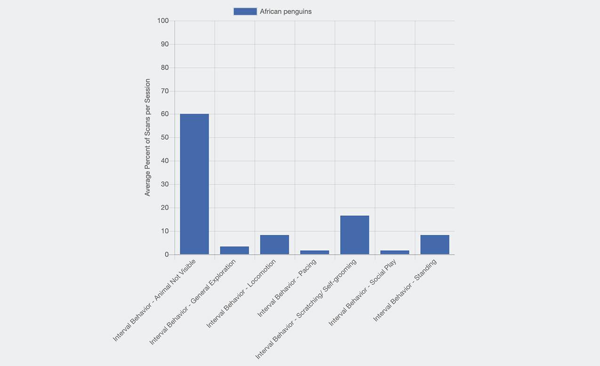
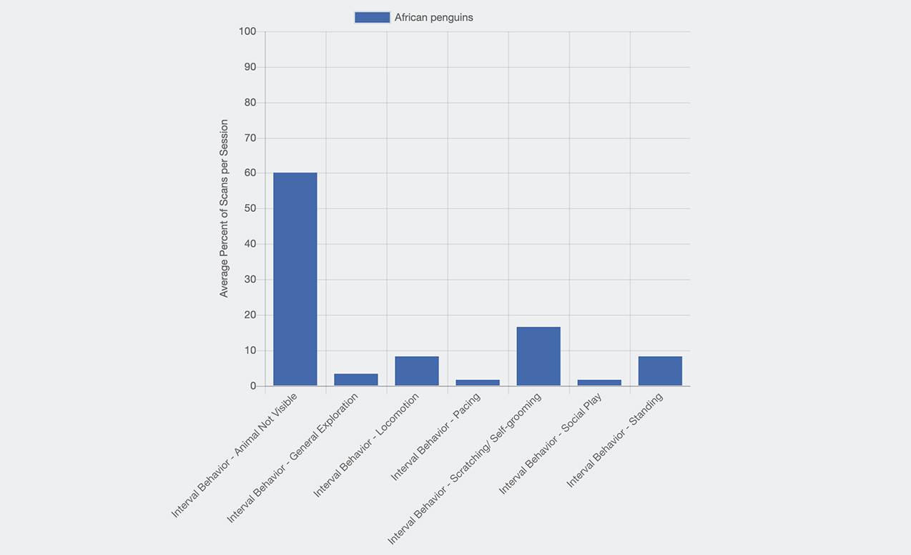
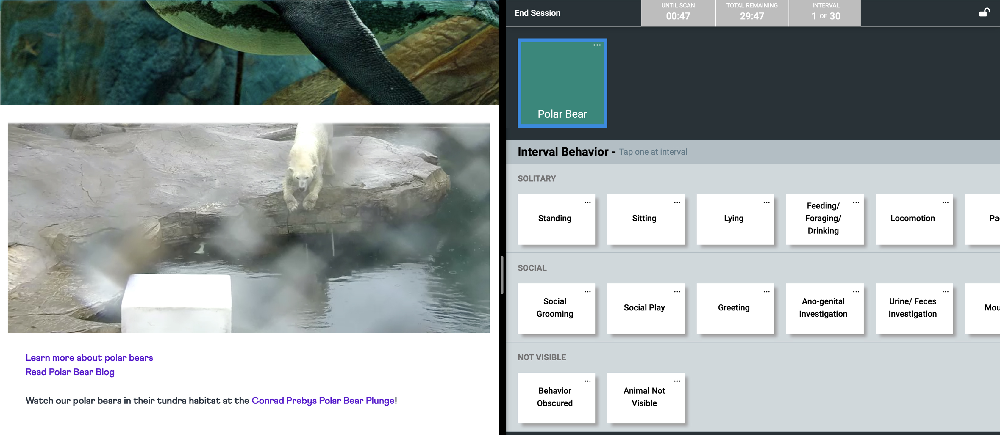
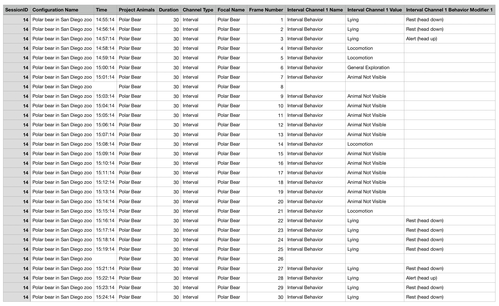

Ethogram exercise:
Ethogram:
a catalog or table of all the different kinds of behavior or activity observed in an animal.
Intro:
In this assignemnt, I observed two animals, a penguin and a polar bear through the live cams of the San Diego zoo.
Observation 1: African penguin in San Diego zoo


Trial 1: In this trial, I can only observe the target penguin in the first four minutes. Most of the time the penguin was out of the screen and the camera was unable to trace it. I found a paper introducing a visual recognition method to solve the problem, which distinguishes individual African penguins by recognizing the unique patterns of their breast feather.
 

Trial 2: In this trial, the penguin stayed on the screen most of the time. But the new problem was there were more than one penguins so once the target penguin got out of the screen, it was super hard to know which penguin came back to the screen was the one I was observing.
Experts: Tilo Burghardt (computer vision and animal biometrics), Richard B. Sherley(a marine ecologist and conservation biologist)

Observation 2: Polar bear in San Diego zoo
 Expert: Elisabeth Kruger(Senior Program Officer of WWF Arctic Wildlife), Steven C. Amstrup(Chief scientist for Polar Bears International)